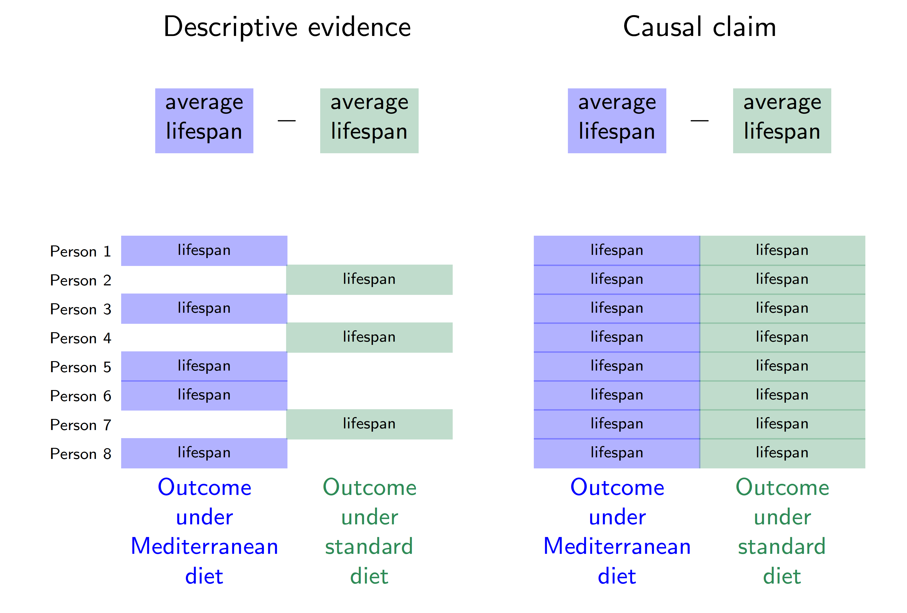
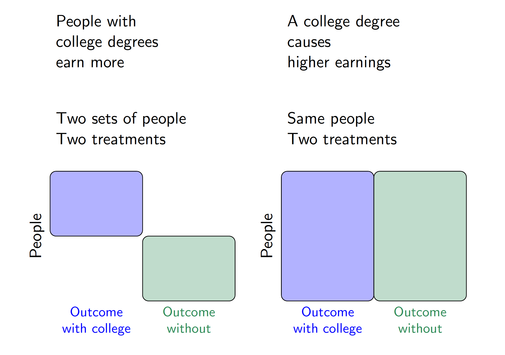

Defining causal effects
The course so far has focused on descriptive claims. For example, we have estimated the average value of an outcome in the population, or among population subgroups. This lecture pivots to causal claims: what would happen if a population were exposed to a hypothetical intervention.
Fundamental problem of causal inference
Health professionals often advise people to eat a Mediterranean diet high in healthy fats such as olive oil, whole grains, and fruits. There is descriptive evidence that lifespans are longer among people who eat a Mediterranean diet compared with among people who eat a standard diet. But does eating a Mediterranean diet cause longer lifespan? The figure below visualizes this question in the potential outcomes framework.

In this hypothetical example, each row corresponds to a person. Person 1 follows a Mediterranean diet and is observed to have a lifespan indicated in blue. Person 2 does not follow a Mediterranean diet and is observed to have a lifespan indicated in green. The descriptive evidence is that lifespans are longer among those eating a Mediterranean diet (blue outcomes on the left) compared with those eating standard diets (green outcomes on the left).
The right side of the figure corresponds to the causal claim, which is different. Person 1 has two potential outcomes: a lifespan that would be realized under a Mediterranean diet and a lifespan that would be realized under a standard diet. The causal effect for Person 1 is the difference between the lifespans that would be realized for that person under each of the two diets. But there is a fundamental problem: person 1 ate a Mediterranean diet, and we did not get to observe their outcome under a standard diet. The fundamental problem of causal inference (Holland 1986) is that causal claims involve a contrast between potential outcomes, but for each unit only one of these potential outcomes is realized. The other is counterfactual and cannot be directly observed.
We will need additional argument and assumptions to use the factual data (left side of the figure) in order to produce answers about causal effects (right side of the figure). Causal inference is a missing data problem insofar as many of the potential outcomes we need are missing.
Mathematical notation
Because each person has more than one potential outcome, we need new mathematical notation to formalize causal claims. We will use subscripts to indicate units (rows of our data). Let \(Y_i\) be the outcome for person \(i\), such as whether person \(i\) survived. Let \(A_i\) be the treatment of person \(i\), for example taking the value or the value . To refer more abstractly to a value the treatment could take, we use the lower case notation \(a\) for a treatment value. Define potential outcomes \(Y_i^\text{MediterraneanDiet}\) and \(Y_i^\text{StandardDiet}\) as the lifespan outcomes that person \(i\) would realize under each of the treatment conditions. More generally, let \(Y_i^a\) denote the potential outcome for unit \(i\) that would be realized if assigned to treatment value \(a\).
The causal effect is a contrast across potential outcomes. For example, the causal effect on Ian’s lifespan of eating a Mediterranean diet versus a standard diet is \[Y_\text{Ian}^\text{MediterraneanDiet} - Y_\text{Ian}^\text{StandardDiet}\]
To connect causal claims to ideas we have already covered from sampling, we will adopt a framework in which potential outcomes are fixed quantities with randomness arising from sampling and/or from random treatment assignment. Each person has a fixed outcome \(Y_i^\text{MediterraneanDiet}\) that would be observed if they were sampled and assigned a Mediterranean diet. This is just like how every baseball player from last week had a salary that would be observed if they were sampled. We will sometimes omit the \(i\) subscript to refer to the random variable for the potential outcome of a randomly-sampled person from the population, \(Y^\text{MediterraneanDiet}\).
The consistency assumption
We want to make causal claims about potential outcomes \(Y_i^a\), but what we observe are factually realized outcome \(Y_i\). To draw the connection, we need to assume that the factual outcomes are consistent with what would be observed if the person in question were assigned to the treatment condition that factually observed. Using \(A_i\) to denote the factual treatment for person \(i\), we assume
\[ Y_i^{A_i} = Y_i \qquad\text{(consistency assumption)} \] This assumption is often obviously true, but we will see later examples where it is violated. One example is when person \(i\)’s outcome depends not only on their own treatment but also on the treatment of some neighboring person \(j\). In many of our initial examples, we will simply assume the consistency assumption holds.
Potential outcomes in math and in words
We will often use potential outcomes within mathematical statements. For example, we might write about the expected outcome if assigned to a Mediterranean diet, \(E(Y^\text{MediterraneanDiet})\). Recall that the expectation operator \(E()\) says to take the population mean of the random variable within the parentheses. We will also use conditional expectations, such as \(E(Y\mid A = \text{MediterraneanDiet})\) which reads “the expected value of \(Y\) given that \(A\) took the value .” The vertical bar says that we are taking the expected value of the variable on the left of the bar within the subgroup defined on the right side of the bar.
In class, we practiced writing statements in math and in English. For example, the mathematical statement \[
E(\text{Earning} \mid \text{CollegeDegree} = \texttt{TRUE}) > E(\text{Earning} \mid \text{CollegeDegree} = \texttt{FALSE})
\] is a descriptive statement that says the expected value of earnings is higher among the subgroup with college degrees than among those without college degrees. We made these kinds of descriptive claims already in code by using group_by() and summarize().
The mathematical statement \[ E\left(\text{Earning}^{\text{CollegeDegree} = \texttt{TRUE}}\right) > E\left(\text{Earning}^{\text{CollegeDegree} = \texttt{FALSE}}\right) \] is a causal claim that the expected value of earnings that a random person would realize if assigned to a college degree is higher than the expected value if a random person were assigned to no college degree. Because there is no vertical bar (\(\mid\)), the causal claim is an average over the entire population on both sides of the inequality. The descriptive claim, by contrast, is an average over two different sets of units. The figure below visualizes the difference between these descriptive and causal claims using a visual analogous to the one used to introduce a Mediterranean diet.

Closing thoughts
The fundamental problem of causal inference is a deep challenge; causal claims will always involve outcomes that are missing and which can only be learned through assumptions and argument. The next class will introduce randomized experiments and show how they provide one setting in which the assumptions required for causal inference are especially tenable.
What to read
No reading is required after this class, but if you would like to learn more about causal inference, there are a few places to look. We will repeatedly use college completion as an example of a causal treatment, drawing on examples from the following book.
Brand, Jennie E. 2023. Overcoming the Odds: The Benefits of Completing College for Unlikely Graduates. Russell Sage Foundation. Here is a link to read online through the UCLA Library.
For a mathematical introduction with examples from epidemiology, see Chapter 1 of this book.
Hern'an, Miguel A. and James M. Robins. Causal Inference: What If?. Boca Raton: Chapman & Hall / CRC.